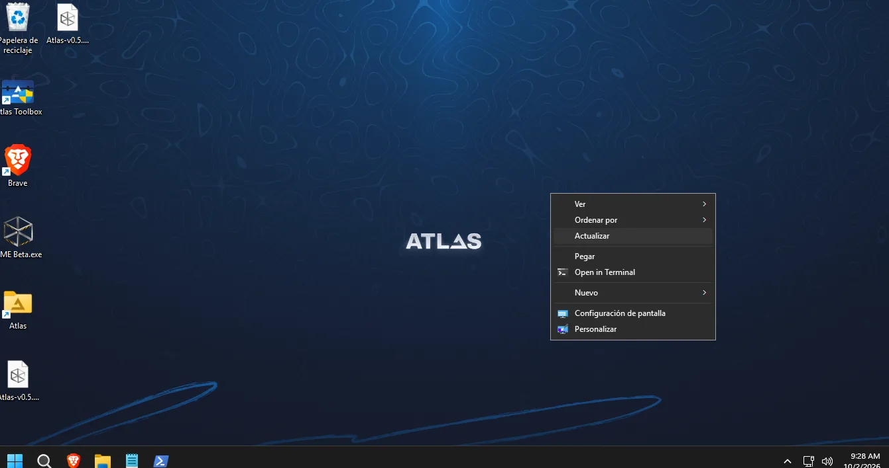
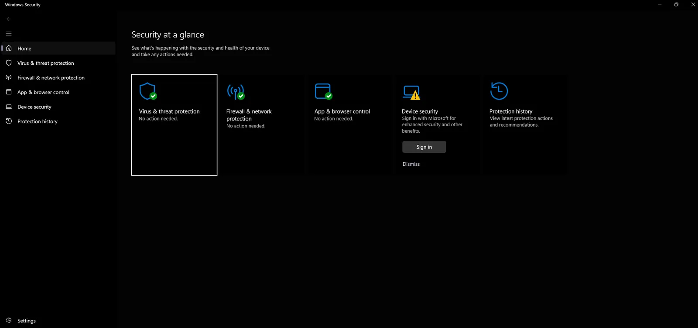
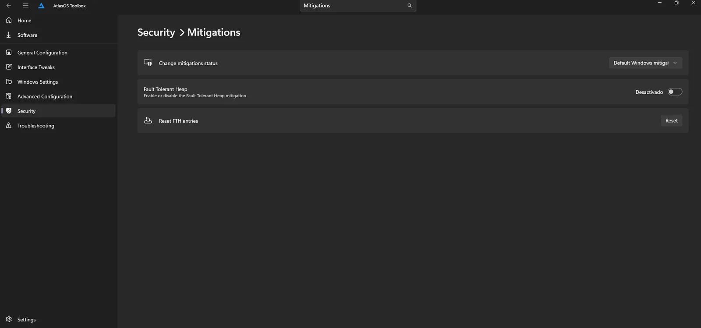
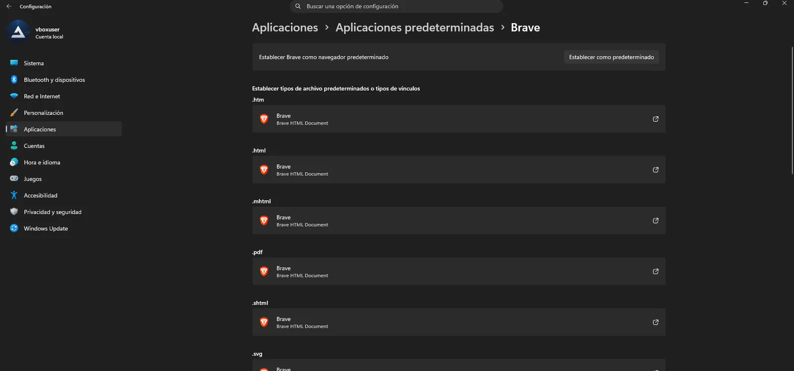
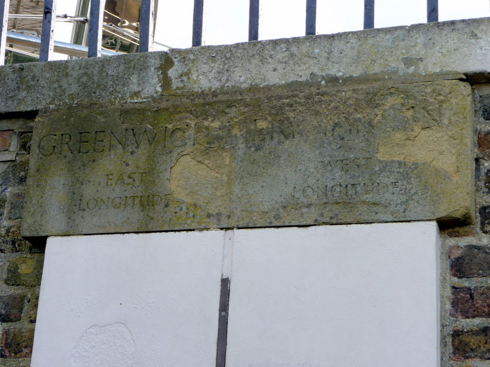

AtlasOS, llevado a Windows 26H2.




Meridian 26H2 es un fork no oficial de AtlasOS 0.5.0, adaptado y auditado para Windows 11 26H2 (build 26300). Se aplica con AME Wizard en unos 15 minutos.
Capturas de la máquina virtual de pruebas, con Windows 11 Pro 26300 y Meridian aplicado.
Descargar el .apbxUn fork, dicho claro
AtlasOS 0.5.0 se publicó para 24H2 y 25H2. Meridian toma ese playbook y lo lleva a Windows 11 26H2, la build 26300.
No es un proyecto del equipo de Atlas ni está respaldado por él. Los errores de Meridian se reportan aquí, nunca a Atlas.
Cada cambio respecto a la 0.5.0 está apuntado con su motivo: 190 archivos YAML revisados, 79 cambios documentados y la misma licencia GPLv3. Leer el registro completo

Qué cambia en 26H2
-
Widgets, tras reiniciar
En 26H2, UCPD bloquea las directivas de Widgets y el navegador predeterminado durante la instalación. Meridian los aplica tras el primer reinicio con
postReboot.ps1, comprueba el resultado y lo reintenta hasta cinco veces. -
Bloqueo de versión real
La versión de destino va en
TargetReleaseVersionInfo. En Atlas 0.5.0 se escribía encima deTargetReleaseVersioncomo texto, y Windows Update ignoraba el bloqueo. -
Edge fuera, con SHA256
Remove-Edge.exequeda fijado a la versión 2.3 y se comprueba con el hash publicado. Si no coincide, no se ejecuta. Ya no pide confirmación a mitad de la instalación. -
Copilot, sin restos
Quitar el AppX de Copilot dejaba 1,1 GB: su aplicación Chromium en
Program Files (x86), un servicio, claves de registro y un acceso directo. Meridian ejecuta su desinstalador oficial y borra lo que queda. - Firewall en cualquier idioma Las 15 reglas de Asistencia remota del firewall se desactivan por su grupo interno, que es el mismo en todos los idiomas. Antes se buscaban por el nombre en inglés y en Windows en español no se encontraba ninguna.
-
Apps nuevas, retiradas
Salen Quick Assist y CrossDevice. Los frameworks, como
WindowsAppRuntime, ya no se desaprovisionan por error, así que las apps que dependen de ellos siguen funcionando. -
Tus opciones, respetadas
DEFAULT.ps1también corre en una instalación limpia y respeta lo que eliges en el asistente: actualizaciones automáticas, hibernación y Defender. - Carpeta Atlas, coherente Cada script de la carpeta Atlas guarda su estado con la numeración real de Atlas Toolbox 0.1.13, así Toolbox muestra lo que de verdad está aplicado.
Nada con ese nombre. Mira el registro completo.
Son 8 de los cambios. Todos, con su archivo y su motivo, en CAMBIOS-26H2.md.
tweaks/privacy/advertising/disable-advertising-info.yml · edítalo
Lo que lees
-
Cómo se instala
Meridian-26H2-v1.0.0.apbx- 45,8 MB
- malte
- .sha256
Primero descargas el paquete y AME Wizard.
-
Requisitos
- Windows 11 26H226300
- Sin actualizaciones pendientesSí
- Conectado a InternetSí
- Conectado a la corrienteSí
- Defender desactivadoSí
- UCPD desactivadoSí
Luego AME Wizard comprueba el equipo.
-
Tus opciones
- Activado
- Predeterminadas
- Manuales
- Brave
- Sí
Después eliges cómo lo quieres.
-
Instalación completada
- ≈ 15 min
- Widgets y navegador
- se reactiva
Al final reinicias, y queda listo.
¿Qué build te sale en winver?
- Windows 11 26H2, build 26300, con todas las actualizaciones instaladas.
- AME Wizard en su última versión, descargado de ameliorated.io.
- Una copia de seguridad. Meridian no tiene desinstalador: para volver a Windows sin modificar hay que reinstalarlo.
- Sin antivirus de terceros, con Internet y el equipo enchufado.
26300compatible
Meridian solo se instala en la build 26300. Para 24H2 (26100) y 25H2 (26200) usa el AtlasOS oficial.
Antes de instalar
¿Es AtlasOS oficial?
No. Es un fork no oficial del playbook de AtlasOS 0.5.0 (commit 6c26aab), sin relación con el equipo de Atlas. Usa su código bajo la licencia GPLv3 y se lo agradece; sus nombres internos, como la carpeta «Atlas» o Atlas Toolbox, se mantienen porque los scripts dependen de ellos.
¿Tiene virus?
Todo el playbook es texto plano en este repositorio y GitHub Actions compila el .apbx a partir de él. Cada release publica su SHA256.
Un aviso honesto: Defender puede marcar Remove-Edge.exe como Trojan:Win32/Yomal!rfn. Es una detección por reputación típica de los ejecutables PyInstaller. Meridian lo descarga fijado a una versión y comprueba su hash antes de ejecutarlo.
¿Puedo volver atrás?
No hay desinstalador, igual que en AtlasOS. Muchas opciones se pueden cambiar después desde la carpeta Atlas o Atlas Toolbox, pero para volver a Windows sin modificar hay que reinstalarlo. Haz una copia de seguridad antes.
¿Funciona en 24H2 o 25H2?
No: el asistente solo acepta la build 26300. Para 24H2 y 25H2 está el AtlasOS oficial, en atlasos.net.
¿Qué contraseña pide el archivo?
Un .apbx es un ZIP renombrado con la contraseña malte, la de todos los playbooks de AME. Sirve para abrirlo con 7-Zip y revisar lo que contiene.
¿Hay problemas conocidos?
Sí, y están apuntados: Windows puede reinstalar CrossDevice en un segundo reinicio; el acceso directo de Copilot en la barra puede volver tras otro arranque; con una cuenta de usuario estándar, el script de usuarios nuevos pide elevación; y Atlas Toolbox 0.1.13 tiene fallos propios en algunos estados.
¿Dónde reporto un error?
En los issues de este repositorio, con tu build, las opciones que elegiste y, si puedes, los registros de C:\ProgramData\AME\Logs. Nunca al equipo de Atlas.